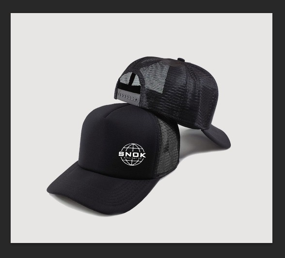

04 / Projects
What I’m building.
A growing collection of professional, entrepreneurial and creative projects.
Featured Project
Stillnotok.
Stillnotok is a fashion brand built around authenticity, resilience, self-awareness and the reality of personal growth.
It is one of the clearest expressions of my entrepreneurial and creative side.
Explore Stillnotok →